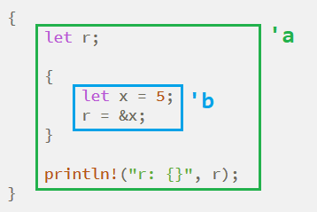

Rust ライフタイム
Rustのライフタイム機構は、所有権機構と同等に重要なリソース管理機構です。
この概念を導入したのは、主に複雑な型システムにおけるリソース管理の問題に対処するためです。
参照は複雑な型を扱う際に欠かせない機構です。なんと言っても複雑な型のデータはプロセッサが簡単にコピーしたり計算したりできないからです。
しかし参照はしばしば極めて複雑なリソース管理の問題を引き起こします。まずはダングリング参照について理解しましょう：
例
let r;
{
let x = 5;
r = &x;
}
println!("r: {}", r);
}
このコードはRustコンパイラを通過できません。理由は、rが参照している値が使用される前にすでに解放されているからです。

上の図の緑色の範囲 'a は r のライフタイムを示し、青色の範囲 'b は x のライフタイムを示しています。明らかに 'b は 'a よりずっと短く、参照は値のライフタイム以内でなければ有効ではありません。
これまで構造体では &str ではなく String を使ってきました。その理由を事例で説明します：
例
if s2.len() > s1.len() {
s2
} else {
s1
}
}
longer 関数は s1 と s2 の2つの文字列スライスのうち、長い方の参照値を返します。しかしこのコードはコンパイルを通りません。戻り値の参照が期限切れの参照を返す可能性があるためです：
例
let r;
{
let s1 = "rust";
let s2 = "ecmascript";
r = longer(s1, s2);
}
println!("{} is longer", r);
}
このプログラムでは比較を行っていますが、r が使用されるときには元の値 s1 と s2 はすでに有効でなくなっています。もちろん r の使用を s1 と s2 のライフタイムの範囲内に移動すればこのエラーを防げます。しかし関数にとっては、自分の外側がどうなっているかを知ることはできません。関数は自分が外に渡す値が正常であることを保証するために、所有権の原則に従ってすべての危険を排除しなければならないため、longer 関数はコンパイルを通りません。
ライフタイム注釈
ライフタイム注釈は、参照のライフタイムを記述する方法です。
これによって参照のライフタイムを変えることはできませんが、適切な場所で2つの参照のライフタイムが一致することを宣言できます。
ライフタイム注釈はシングルクォートで始まり、その後に小文字の単語が続きます：
&i32 // 常规引用 &'a i32 // 含有生命周期注释的引用 &'a mut i32 // 可变型含有生命周期注释的引用
ライフタイム注釈を使って longer 関数を改良しましょう：
例
if s2.len() > s1.len() {
s2
} else {
s1
}
}
ジェネリクス宣言を使ってライフタイムの名前を指定する必要があります。そうすれば、関数の戻り値のライフタイムは2つの引数のライフタイムと一致します。したがって呼び出し時には次のように書けます：
例
let r;
{
let s1 = "rust";
let s2 = "ecmascript";
r = longer(s1, s2);
println!("{} is longer", r);
}
}
上記2つのプログラムを組み合わせた実行結果：
ecmascript is longer
注意：自動型推論の原則を忘れないでください。
構造体で文字列スライス参照を使う
これは以前に残された疑問です。ここで解答します：
例
struct Str<'a> {
content: &'a str
}
let s = Str {
content: "string_slice"
};
println!("s.content = {}", s.content);
}
実行結果：
s.content = string_slice
構造体 Str にメソッド定義がある場合：
例
fn get_content(&self) -> &str {
self.content
}
}
ここでは戻り値にライフタイム注釈がありませんが、付けても構いません。これは歴史的な問題で、初期のRustはライフタイムの自動推論をサポートしておらず、すべてのライフタイムを厳密に宣言する必要がありました。しかし、主流の安定版Rustはすでにこの機能をサポートしています。
静的ライフタイム
ライフタイム注釈には特別なものがあります：'static です。二重引用符で囲まれたすべての文字列定数が表す正確なデータ型は &'static str です。'static が示すライフタイムは、プログラムの実行開始から実行終了までです。
ジェネリクス、トレイト、ライフタイムの連携
例
fn longest_with_an_announcement<'a, T>(x: &'a str, y: &'a str, ann: T) -> &'a str
where T: Display
{
println!("Announcement! {}", ann);
if x.len() > y.len() {
x
} else {
y
}
}
このプログラムは Rust バイブルからの出典で、ジェネリクス、トレイト、ライフタイム機構を同時に使用したプログラムです。無理に理解する必要はありません。体験しておけばよいでしょう。いずれ必要になるからです！
その他の拡張
一番乗り
sha***shafa.com
longer にライフタイムを追加した後：
以下のコードは実行できます。ここでは s1、s2 は r にコピーされています。
fn main() { let r; { let s1 = "rust"; let s2 = "ecmascript"; r = longer(s1, s2); } println!("{} is longer", r); }以下のようにするとコンパイルを通りません。s1、s2 には copy trait がないため、メモリ上の値は{}実行が終わった後に drop によって自動的にクリーンアップされます。println 文を{}スコープ内に移動すれば正常に実行できます。
fn main() { let r; { let s1 = String::from("rust"); let s2 = String::from("ecmascript"); r = longer(s1, s2); } println!("{} is longer", r); }一番乗り
sha***shafa.com
Keillion
735***921@qq.com
参考URL
先の投稿者の説明をより詳しく説明します：
fn longer<'a>(s1: &'a str, s2: &'a str) -> &'a str fn main() { let r; { let s1 = "rust"; let s2 = "ecmascript"; r = longer(s1, s2); } println!("{} is longer", r); }ここでの文字列は
"rust"、"ecmascript"すべて文字列リテラル定数(string literals) であり、ライフタイムはプログラム全体の実行期間中続きます。s1、s2すべて借用の形式です。&str，r文字列全体をコピーしているのではなく、「コピー」しているのは文字列リテラル定数への参照だけです。したがって実行効率は非常に高いです。さらにr内の値は、たとえprintln前の中括弧を出ても、ライフタイムはまだ続いています。Keillion
735***921@qq.com
参考URL